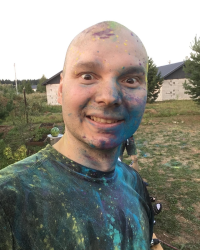

Антон Чураков
Инженер по сварке / Студент курса Python-разработчик
Образование
- 2009. Пермский Государственный Технолонический Университет. Механико-технологический факультет. Кафедра сварки. Инженер по специальности "Оборудование и технология сварочного производства".
- 2005. Профессиональный лицей №12. Квалификация: Электрогазосварщик ручной сварки 2-го разряда.
Навыки
- Практическое и теоретическое владение более 8 видами сварки
- Планирование деятельности участка
- Экономические расчеты
- Бережливое производство
Навыки, которые пригодятся в IT
- Английский язык на уровне Upper Intermediate
- Гугление как внутри документации, так и в WEB (в том числе на английском)
- Системность
- Поиск проблемы, выявление и описание, решение, исключающее/минимизируещее повторное возниконовение
Дополнительная информация
Я умею управлять затратами (планирую, контролирую).
Я за: качество работы (не нужно смотреть и доделывать); новые идеи (от зарождения до воплощения и анализа); командное развитие (делюсь с командой техниками и инструментами).
Мои характерные качества: дружелюбность и коммуникабельность, исполнительность, терпеливость при этом требователен. Знаю разницу между дружелюбностью и попустительством.
Интересы, увлечения: Компьютерные программы и приложения, мобильная и портативная техника, художественная и познавательная литература, дополнительное образование, тайм-менеджмент, 3D моделирование и печать.
Соавтор и администратор Проекта "Я сварщик" imwelder.ru - современного сообщества сварщиков и специалистов сварочного производства разных возрастов и квалификации.